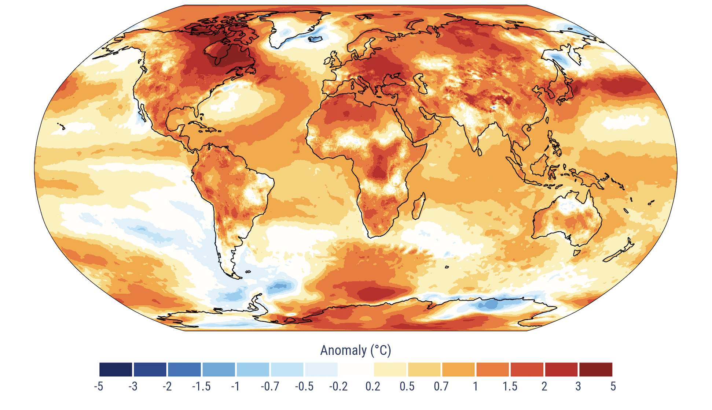

World Sectoral Economy-Environment Database (WSEED)

Surface air temperature anomalies in 2024, relative to the average for the 1991–2020 reference period. Source: C3S / ECMWF.
A new global economic-environment dataset with historic data (1970–2025) and projections for future scenarios (2025–2100).
Developed by Lucas Chancel, Cornelia Mohren, Moritz Odersky, Thomas Piketty and Anmol Somanchi, WSEED collects and harmonizes sectoral economic and environment data across time and countries from a wide range of sources. The database includes annual series for 57 core territories (48 main countries + 9 residual regions) and 8 production sectors on value-added (GDP), relative prices, labour hours, input-output linkages, GHG emissions, and population.
The WSEED database is accompanied by a research paper titled “Prosperity Within Limits? Planetary Habitability, Global Convergence and Structural Transformation, 2026–2100”. The database is intended to be a public good for researchers, journalists, policymakers, and all interested citizens interested in studying the intersection of the climate and the economy.
Data and replication materials are on the Data page. The working paper is available on the Research page.